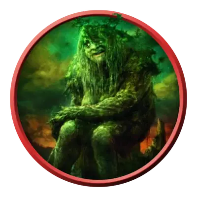

Великан Шэдоумура
Shadowmoor Giant
Огромный Великан, Хаотичный Злой

Класс Защиты 14 Инициатива +2 (12)
Хиты 172 (15к12 + 75)
Скорость 40 футов
| мод | спас | ||
|---|---|---|---|
| СИЛ | 22 | +6 | +6 |
| ЛОВ | 14 | +2 | +2 |
| ТЕЛ | 20 | +5 | +8 |
| мод | спас | ||
|---|---|---|---|
| ИНТ | 7 | −2 | −2 |
| МДР | 19 | +4 | +7 |
| ХАР | 8 | −1 | −1 |
Чувства Тёмное зрение 120 футов, пассивное Восприятие 14
Языки Великаний
Опасность 8 (3 900 опыта; БВ +3)
Действия
Мультиатака. Великан делает три атаки Вырванным деревом или Валуном в любой комбинации.
Вырванное дерево. Бросок рукопашной атаки: +9, досягаемость 15 фт. Попадание: 17 (2к10 + 6) Дробящего урона.
Валун. Бросок дальнобойной атаки: +9, дистанция 60/240 фт. Попадание: 13 (2к6 + 6) Дробящего Урона. Если цель — существо Большого размера или меньше, она Опрокидывается.
Катаклизм дикой магии (Перезарядка 5–6). Спасбросок Ловкости: Сл 15, каждое существо в 20-футовой Сфере с центром в точке в пределах 120 футов. Провал: 28 (8к6) урона (бросьте 1к4, чтобы определить тип урона: 1—Кислотой; 2—Огнём; 3—Электричеством; 4—Звуком). Успех: Только половина урона.
Бонус мастерства +3
Великаны Лорвина-Шэдоумура
Блуждающие величественные создания
Великаны из мира Лорвин-Шэдоумур — это мудрые древние создания, странствующие по родным землям в поисках диковин или просто тихого места для отдыха. Они живут в полной гармонии с природой, но им почти нет дела до мельтешащей вокруг мелюзги. В лучшем случае великан просто отстранён и равнодушен к дрязгам боггартов, киткинов, эльфов и прочих. В худшем — обрушивает на мелкий народец ярость, видя лишь назойливых вредителей, которых не мешало бы прихлопнуть.
Когда великан из Лорвина-Шэдоумура засыпает, сны его всегда ярки и драматичны. Эти сновидения они почитают как явные пророчества или важные послания, граничащие с божественным откровением. Свои места для отдыха великаны отмечают громадными каменными арками, дабы никто не смел нарушить их покой.
Рассудительные авантюристы обходят подобные арки стороной, не желая навлечь на себя гнев спящего великана. А вот охотники за сокровищами, напротив, ищут их — втайне надеясь, что место давно заброшено, но всё ещё хранит ценные реликвии прежнего хозяина. Таким искателям удачи следует ступать крайне осторожно: разгневанный великан способен обрушить на врагов всю горную мощь и сокрушить их с силой горного оползня.
Великаны Шэдоумура впадают в глубочайший сон, граничащий с зимней спячкой. Спят они так долго, что буквально врастают в землю, напитываясь дикой магией, разлитой в округе. Эту магию они потом способны подчинять своей воле и выпускать на волю с разрушительными последствиями.